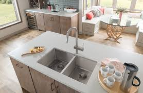

If you are doing something and you have extra water you can use it for something else like watering your plants. It helps because it is better to recycle.
2: Get dual sinks
If you have dual sinks. You can fill one of the sinks with cold water for rinsing and the other one can have hot water for washing so that you need less water.

3: Scrape dishes when putting the dishes in
Start scraping your dishes instead of rinsing dishes, because scraping before putting dirty dishes can save ten gallons a load.
4: Buy a high efficiency washer
The average American family washes about 300 loads of laundry each year. Clothes washing accounts for more than 20 percent of residential indoor water use. As a rule, front-loading machines use less water than top-loading machines. But whether you’re shopping for a front- or top-loading washer, to save the most water, look for an Energy Star–certified machine. These machines use about 40 percent less water than regular washers.
5. You only need to flush the poop
It is good to only flush up poop in the toilet, because pee does not make any smell. So you only need to flush the poop and also it saves a lot of water.
6. Cover up your pool
If you own a pool, you are going to need a pool cover because if you do not use a pool cover the water is going to evaporate and that will just waste the water in the pool and then you have to refill it and more water will evaporate. But if you have a pool cover, then the water will not evaporate and more water will be saved.
7. Water by hand
It is good to not water by a hose because with a hose, there is more extra water that your plants do not need and watering by hand does not produce extra water.
8. Shorten your showers
If you take a shower that is very long, then shorten your showers because if you have a long showers then it will waste a lot of water so you should aim for five minutes or less.Recomendation: Showers take up less water than tubs
9. Capture rainwater
If you live in a place where there is some rain and you have some plants then capture the rain so then you can water your plants with rainwater and so that it will not waste water. You can capture rainwater by using a big tank to water your plants.
10. Turn of the faucet
After using the sink then make sure they are completely closed with no drops and whenever there is a leak, fix it or tell your parents. If you do these stuff it will make sure you do not waste water